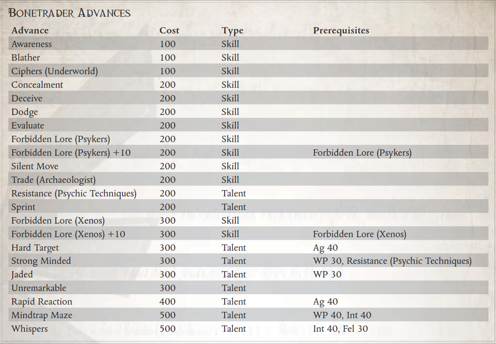

“是的，这个装置发出邪恶的光芒，是明显的异形构造，是由一个疯狂的星语者在Unbeholden Reaches一个没有名字的世界上发现的，但我相信它是绝对安全的。它显然是某种容器，所以它一定是安全的。我认为它的创造者可能将它用作饮水杯。触摸它？啊，好吧，我不会……”
——Footfall 的 Paul Morgenus，Bonetrader
Koronus Expanse 散落着早已被遗忘的外星种族的骸骨。对于大多数盗贼商人来说，这些废墟充其量只是一种好奇，而在最坏的情况下，帝皇的光芒从科罗诺斯通道溢出并进入广域之前，这些遗迹是一个阴暗的时期。大多数冷交易者以整理被遗忘物种的残骸为生，并将他们发现的小玩意转给卡利西星区无聊的贵族，以换取巨额金钱。当然，有时冷交易者打捞的外星设备和人工制品具有比人们想象的更大的目的和力量，因此会对他们的购买者产生无法预料的后果。可怕的 Halo Artefacts 就是这样被诅咒的物品，而 Koronus Expanse 中许多失落的种族在最无害的包裹中留下了同样邪恶的机器。虽然某些贵族会为任何外星人制造的物品付出高昂的代价，但在帝国内部，有些人甚至说在更远的地方，他们不希望看到这些文物中最危险的一件进入卡利西斯星区。
几十年前，无赖商人 Aaroj Beleroph 代表他的王朝来到科罗努斯广域，并在 Footfall 建立了一个小型贸易办事处。正式地，这个办公室的目的是交易某些原产于科罗努斯广域的生物材料，它确实购买了大量的墓地花、Kerraxin 和 Viperleaf。然而，这个奇怪的无名王朝的某些代表被 Footfall 的冷商知道，他们的商品要求真正高昂的价格——但仅限于某些商品，即那些具有心理共鸣的商品。这样的事情已经非常罕见了，但是对一些外星人工制品的这一特殊特性的新兴趣促使许多人探索如何使用灵能者来寻找这样的设备。针对这些谣言，其他几个 Rogue Trader 王朝也出于类似目的在 Footfall 设立了看似无害的贸易办事处。关于贝勒罗夫王朝寻找心理共鸣装置的原因的传言不绝于耳；有人说他们是与卡拉德瓦尔结盟的混沌崇拜者，而另一些人则声称该组织与 Navis Nobilite、宗教裁判所有联系，或者真正代表了一个名为“Ba'luithe”的神秘外星人。虽然没有人确定新来的贝勒罗夫王朝真正想要这些灵能说服的神器，但其他流氓交易王朝的代表几乎不会因此而在竞争中获得优势。结果，Footfall 以及整个 Koronus Expanse 的灵能协调异形遗物的价格急剧上涨，并且冷商人口中的一群专家已经开始满足对这些人工制品的新需求。
这些被诅咒的设备是所谓的 Bonetraders、商人和盗墓者的主要利益，他们专门从事粗心或恶意前兆留下的具有心理共鸣的物体的交易。对于 Bonetraders，psykers 是业务不可或缺的一部分。只有灵能者才能将有价值的埋藏文物与散布在科罗努斯广域的死亡帝国的碎屑分开。然而，正如任何成功的交易者都知道的那样，信任是一种奢侈品，而且在与那些被亚空间接触的人打交道时尤其昂贵。 Bonetrader 可能需要一个灵能者——或者实际上，许多灵能者——来开展他的业务，但他还必须知道如何处理任何给定的灵能者如果他不小心就可能给他带来的麻烦。除了 Koronus Expanse 的常见危险之外，任何依赖于将灵能者带入潜在危险境地的人都必须准备好清理随之而来的混乱局面。
Bonetraders，无论是通过研究还是痛苦的经验，都将自己掌握在对灵能者“天赋”的了解中，以便更好地利用他们的才能来获利。当仅仅遇到野蛮的拉克戈尔或可怕的不朽的尤瓦斯守护者并不是行星冒险进入坟墓世界的最大风险时，了解你面临的危险是值得的——以及针对你自己的一些对策不可预知的下属近在咫尺。如果 Bonetrader 不只是为了生存，而是为了获利，他必须仔细权衡任何未来的冒险可能会让他付出的王位和鲜血。
所需职业：除 Astropath Transcendent、Navigator 或 Ork Weirdboy 之外的任何职业
替代等级：等级 3 或更高 (10,000 xp)
要求：智力 35，WP 35
其他要求：探索者可能不具备灵能等级或不可触碰的特质，并且在获得此替代职业等级之前，必须至少完成一次灵能活动物品的销售或以其他方式参与包括灵能者在内的商业交易。
好处：探索者获得女巫天赋的利润。

女巫的利润（天赋）
要求：智力 35
探险者擅长与灵能者打交道，无论是在战场上还是作为商业伙伴。
每当探索者完成直接涉及来自船员之外的一个或一组灵能者的奋进时，将利润因子组额外增加 1 点。
思维迷宫（天赋）
要求：WP 40，智力 40
探险者已经将他的智力训练成一个钢铁陷阱，它会在精神存在的最轻微挑衅下迅速关闭。 试图超越他思想界限的灵能者经常发现自己面临着令人困惑的图像和狡猾的心理诡计，使他们筋疲力尽和迷失方向。
探索者可以将他的智力加值加到他必须进行的任何对抗意志力测试中，因为另一个生物的精神力量。 如果他赢得了这次对抗测试，试图篡改他的思想的灵能者会获得一级疲劳。